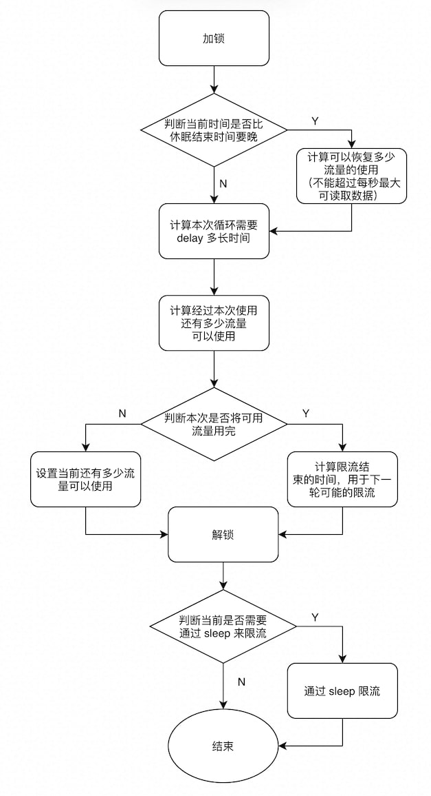

这里的限流指，对于某个 I/O 接口，例如 HTTP handler 的 resp.Body，实现一个方法实现限流，比如限制这个接口的传输速度是 5MB/s 。而计数指，对于某个 I/O 接口，例如 io.Reader，实现一个方式实现对其 Read 方法读取数据速率的实时计算，这样子在实现 http get 的时候就可以实时打印下载速度了。
限流 数据结构设计如下
1 2 3 4 5 6 7 8 9 10 11 12 13 14 15 16 17 18 19 20 21 22 23 24 25 26 27 28 29 30 31 32 33 34 35 36 37 38 39 40 41 42 43 44 45 46 47 48 49 type MyThrottle struct { rate int64 lock sync.Mutex endThrottleTime time.Time availableSize int writer io.Writer } type MyThrottleWriter struct { writer io.Writer myThrottle *MyThrottle } func NewMyThrottle (rate int64 ) *MyThrottle return &MyThrottle{ rate: rate, endThrottleTime: time.Now(), availableSize: 0 , } } func (m *MyThrottle) NewWriter (writer io.Writer) *MyThrottleWriter return &MyThrottleWriter{ writer: writer, myThrottle: m, } } func (m *MyThrottleWriter) Write (data []byte ) (n int , err error) const maxAcquire = 1 << 20 for len (data) > 0 { l := len (data) if l > maxAcquire { l = maxAcquire } m.myThrottle.acquire(l) wn, err := m.writer.Write(data[:l]) if err != nil { return 0 , err } n += wn data = data[l:] } return } func (m *MyThrottle) acquire (acquireSize int ) }
限流的主逻辑在函数 acquire 中。大致限流的流程如下图所示

函数实现如下
1 2 3 4 5 6 7 8 9 10 11 12 13 14 15 16 17 18 19 20 21 22 23 24 25 26 27 func (m *MyThrottle) acquire (acquireSize int ) var ( delay time.Duration currTime = time.Now() ) m.lock.Lock() if currTime.After(m.endThrottleTime) { m.availableSize += int (float64 (currTime.Sub(m.endThrottleTime)) / float64 (time.Second.Nanoseconds()) * float64 (m.rate)) if m.availableSize > int (m.rate) { m.availableSize = int (m.rate) } m.endThrottleTime = currTime } delay = m.endThrottleTime.Sub(currTime) m.availableSize -= acquireSize if m.availableSize < 0 { m.endThrottleTime = m.endThrottleTime.Add(time.Duration(float64 (-m.availableSize) * float64 (time.Second.Nanoseconds()) / float64 (m.rate))) m.availableSize = 0 } m.lock.Unlock() if delay > 0 { time.Sleep(delay) } }
现在实现一个简单的 http server 来测试限流器的功能，可以使用多个 curl 或 wget 来请求这个 server，查看速度之和是否为 4 MB/s
1 2 3 4 5 6 7 8 9 10 11 12 13 14 15 16 17 18 19 20 21 22 23 package mainimport ( "bytes" "io" "log" "net/http" ) func main () rate := int64 (4 * (1 << 20 )) th := NewMyThrottle(rate) http.HandleFunc("/" , func (w http.ResponseWriter, req *http.Request) writer := th.NewWriter(w) r := bytes.NewBuffer(make ([]byte , 50 *4 *(1 << 20 ))) if _, err := io.Copy(writer, r); err != nil { log.Fatal(err) } }) if err := http.ListenAndServe(":8080" , nil ); err != nil { log.Fatal(err) } }
计数 go 中 Reader 和 Writer 接口在调用 Read 方法和 Write 方法后都会返回处理字节的数目，所以可以实现一个 wrapper 函数对原有的 Reader 和 Writer 进行封装，如下：
1 2 3 4 5 6 7 8 9 10 11 12 13 14 15 16 17 18 19 20 21 22 23 24 func myCopy (w io.Writer, r io.Reader) (int64 , error) from := func (b []byte ) (n int , err error) n, err = r.Read(b) return n, err } to := func (p []byte ) (n int , err error) n, err = w.Write(p) return n, err } return io.Copy(WriterF(to), ReaderF(from)) } type ReaderF func (b []byte ) (n int , err error) func (f ReaderF) Read (b []byte ) (n int , err error) return f(b) }type WriterF func (b []byte ) (n int , err error) func (f WriterF) Write (b []byte ) (n int , err error) return f(b) }
其实这里的思路有些参考标准库中的 io.TeeReader，实现相同的接口，并对原接口实现函数进行封装，有点像装饰器模式
1 2 3 4 5 6 7 8 9 10 11 12 13 14 15 16 17 18 func TeeReader (r Reader, w Writer) Reader return &teeReader{r, w} } type teeReader struct { r Reader w Writer } func (t *teeReader) Read (p []byte ) (n int , err error) n, err = t.r.Read(p) if n > 0 { if n, err := t.w.Write(p[:n]); err != nil { return n, err } } return }
于是，实际的代码实现如下：
1 2 3 4 5 6 7 8 9 10 11 12 13 14 15 16 17 18 19 20 21 22 23 24 25 26 27 28 29 30 31 32 33 34 35 36 func recordCopy (w io.Writer, r io.Reader) (int64 , error) currTime := time.Now() readCount := 0 from := func (b []byte ) (n int , err error) return r.Read(b) } to := func (p []byte ) (n int , err error) n, err = w.Write(p) if n != 0 { readCount += n if dur := time.Since(currTime);dur > time.Second { log.Println("\033[H\033[2Jread" , calculate(dur, readCount)) currTime = time.Now() readCount = 0 } } return n, err } return io.Copy(WriterF(to), ReaderF(from)) } type ReaderF func (b []byte ) (n int , err error) func (f ReaderF) Read (b []byte ) (n int , err error) return f(b) }type WriterF func (b []byte ) (n int , err error) func (f WriterF) Write (b []byte ) (n int , err error) return f(b) }func calculate (elapse time.Duration, size int ) string res := int64 ((float64 (size) / 1024 ) / elapse.Seconds()) if res > 1024 { return fmt.Sprintf("%.2f MB/s\n" , float64 (res)/1024 ) } return fmt.Sprintf("%d KB/s\b" , res) }
这样，就可以直接拿来使用了
1 2 3 4 5 6 7 8 9 10 11 12 13 14 15 16 17 18 func main () resp, err := http.Get("http://0.0.0.0:8080" ) if err != nil { panic (err) } defer resp.Body.Close() os.Remove("data.dmg" ) file, err := os.OpenFile("data.dmg" , os.O_CREATE|os.O_RDWR, 0777 ) if err != nil { panic (err) } defer file.Close() if _, err := recordCopy(file, resp.Body); err != nil { panic (err) } }
此时，就可以那这个程序去请求之前写的带限流的服务，可以看到其显示的速度为 4MB/s ，当有两个程序同时请求时，速度之和为 4MB/s